Foreninger og lag
33 foreninger og lag med tilknytning til Oslomarka. Mange av dem gir også ut bøkene, årbøkene og kartene i samlingen.

Asbjørnsenselskapet
Etablert 2008Asbjørnsenselskapet ble stiftet i 2008, og har som formål å fremme kjennskapen til alle sider ved Peter Christen Asbjørnsens liv, virke og forfatterskap, og selskapet står også som utgiver av årsskriftet Juletræet (Kilde:…Asbjørnsenselskapet ble stiftet i 2008, og har som formål å fremme…
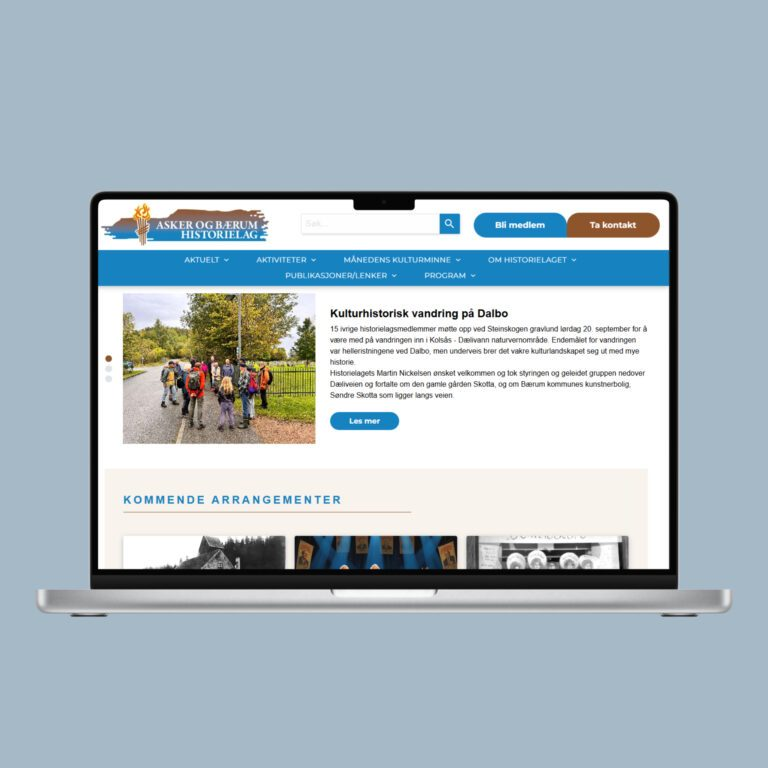
Asker og Bærum Historielag
Etablert 1952Asker og Bærum Historielag ble stiftet i 1952. Lagets formål er å verne om lokale kulturminner og spre kunnskap om vår fortid. Historielaget utgir årboken Vest for byen. Historielaget har bidratt til, eller stått for rydding og bevaring av flere…Asker og Bærum Historielag ble stiftet i 1952. Lagets formål er å verne om…
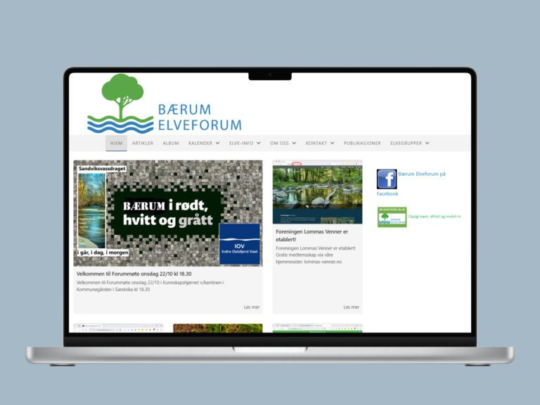
Bærum Elveforum
Etablert 2006Bærum Elveforum ble etablert i 2006, og er lokalisert i Bærum kommune. Bærum Elveforum er et kompetanse - og kontaktforum for frivillige arbeidsgrupper for Bærums vassdrag, med oppgave å bidra til vern, rehabilitering og gjenåpni…Bærum Elveforum ble etablert i 2006, og er lokalisert i Bærum kommune.…
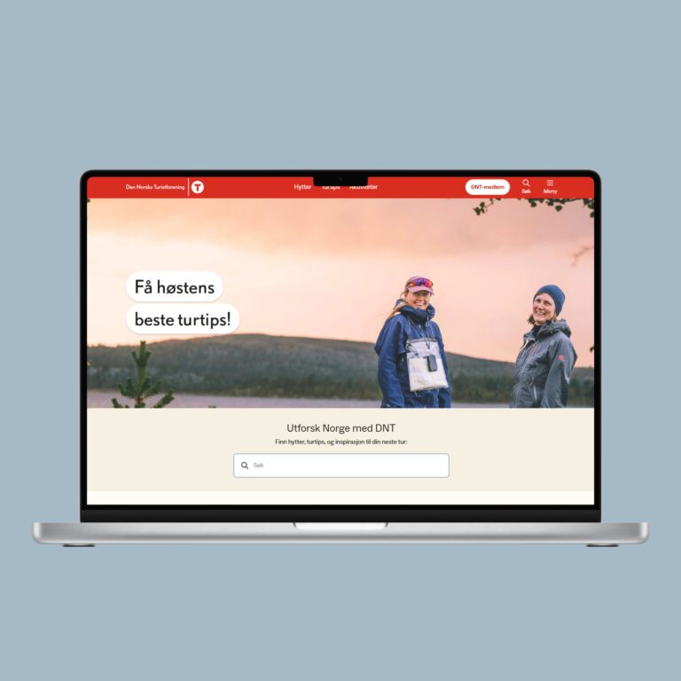
Den Norske Turistforening
Etablert 1868Den Norske Turistforening (DNT) ble stiftet i 1868, initiert av Thomas Heftye (1822-1886). DNT er Norges største friluftsorganisasjon. Formålet er å fremme et enkelt, aktivt, trygt og miljøvennlig friluftsliv for alle. Merker stier og ruter, og…Den Norske Turistforening (DNT) ble stiftet i 1868, initiert av Thomas Hefty…

Enebakk Historielag
Etablert 1955Enebakk Historielag ble stiftet 29. mars 1955. Lagets formål er å samle og utbre kunnskap om Enebakks historie på ulike emner og felter. Enebakk Historielag drifter Enebakk bygdetun og Aksel Bråtens hjulmakerverksted, arrangerer…Enebakk Historielag ble stiftet 29. mars 1955. Lagets formål er å samle…

Follomarkas Venner
Etablert 2023Follomarkas Venner ble stiftet i 2023, og er en frivillig forening som samler lokale krefter for å styrke friluftsliv, folkehelse og bærekraftig bruk av Follomarka. Gjennom dugnad, teknologi og samarbeid sørger vi for bedre stier, naturisbaner og…Follomarkas Venner ble stiftet i 2023, og er en frivillig forening som samler…
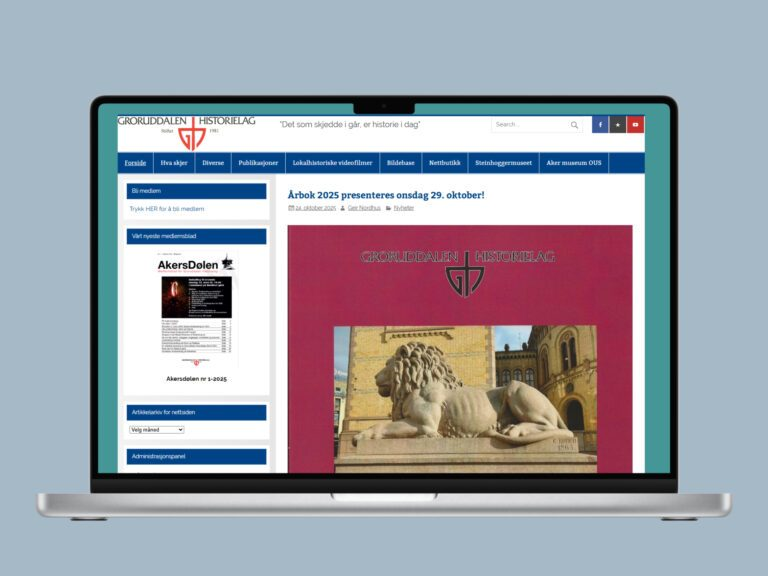
Groruddalen Historielag
Etablert 1981Groruddalen Historielag ble stiftet den 27. oktober 1981 med følgende formålsparagraf: Lagets formål er å samle og utbre kunnskap om Groruddalens historie. Laget skal arbeide for registrering og vern av kulturhistoriske fornminner av alle slag i…Groruddalen Historielag ble stiftet den 27. oktober 1981 med følgende…
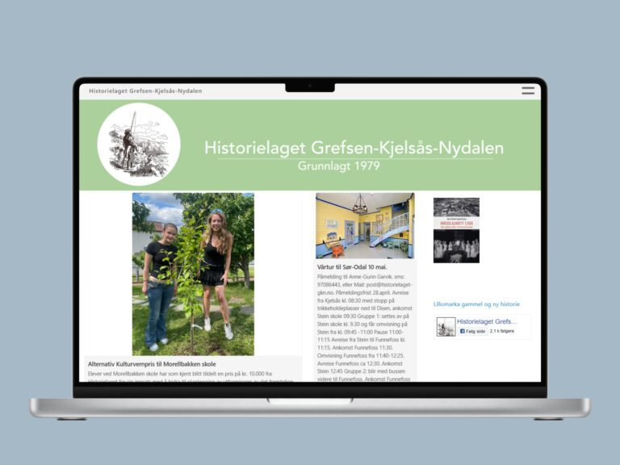
Historielaget Grefsen–Kjelsås–Nydalen
Etablert 1979Historielaget Grefsen–Kjelsås–Nydalen ble grunnlagt i 1979. Historielaget har til formål å vekke interesse og skape forståelse for vår historie. De arbeider for å utbre kjennskap til vår kulturarv og verne kulturminner av alle slag.Historielaget Grefsen–Kjelsås–Nydalen ble grunnlagt i 1979.…
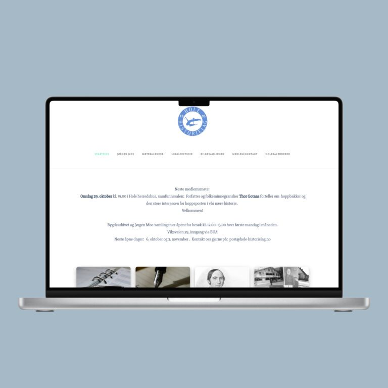
Hole Historielag
Etablert 1995Hole Historielag ble stiftet i 1995, og har som formål å fremme interesse for lokalhistorie i Hole kommune. De ønsker å skape en følelse av tilhørighet og trivsel ved å øke kunnskapen om nærmiljøet. Laget tar også et spesielt ansvar for å hold…Hole Historielag ble stiftet i 1995, og har som formål å fremme interesse f…

Kjentmannsmerket.org
Etablert 2000Kjentmannsmerket.org ble stiftet i 2000, og er et uavhengig nettsted som står fritt i forhold til arrangørene av Kjentmannsmerket: Skiforeningen og Kjentmannskomiteen. Nettstedet har innhold som omhandler både aktuelle…Kjentmannsmerket.org ble stiftet i 2000, og er et uavhengig nettsted…

Lillomarkas Venner
Etablert 1969Lillomarkas Venner er en interesseorganisasjon for Lillomarka, den ble startet i 1969. Foreningen arbeider for bevaring av Lillomarka og de natur- og kulturverdier som finnes, samt for bevaring av Lillomarkas grenser og arbeide for å utvide mark…Lillomarkas Venner er en interesseorganisasjon for Lillomarka,…
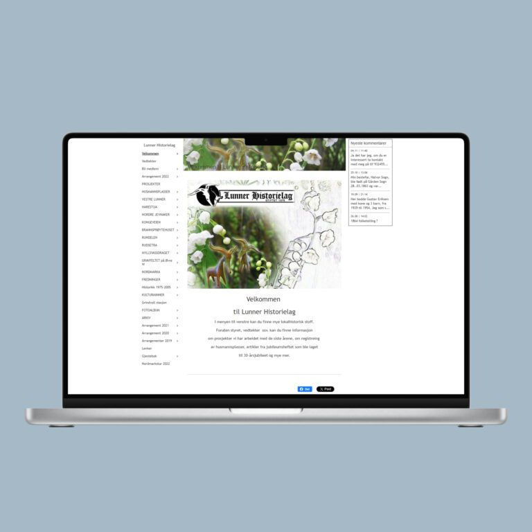
Lunner Historielag
Etablert 1975Lunner Historielag ble stiftet i 1975, og har som formål å fremme interessen for lokalhistorie på et bredt grunnlag, verne og ta vare på bygdas historie og kulturminner, spre kunnskap om lokalhistorie og kulturvern og øke tilgjengeligheten til…Lunner Historielag ble stiftet i 1975, og har som formål å fremme interessen…
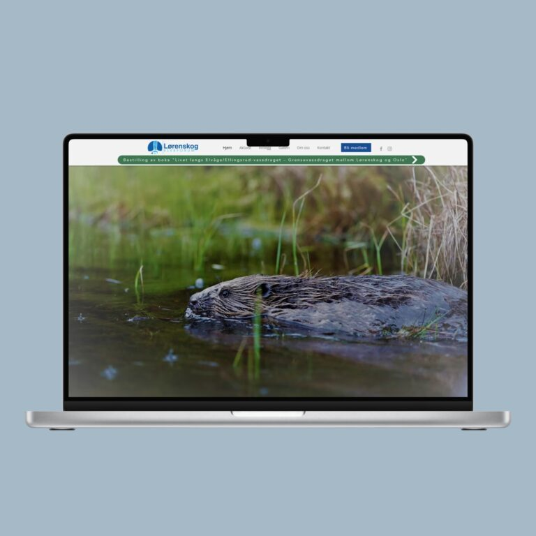
Lørenskog Elveforum
Etablert 2016Lørenskog Elveforum ble stiftet i 2016, og er lokalisert i Lørenskog kommune. Lørenskog Elveforum er et kompetanse- og kontaktforum for frivillige personer og organisasjoner med interesse i Lørenskog sine vassdrag. Elveforumets formål er å…Lørenskog Elveforum ble stiftet i 2016, og er lokalisert i Lørenskog kommun…
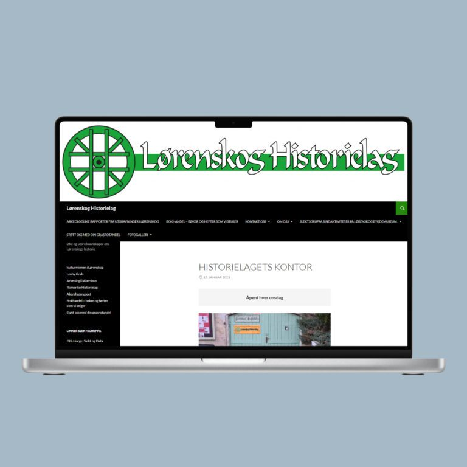
Lørenskog Historielag
Etablert 1954Lørenskog Historielag ble stiftet i 1954, og har som formål å øke og utbre kunnskaper om Lørenskogs historie og vekke interesse for kulturliv og virke i bygda gjennom tidene. Laget er tilsluttet Romerike Historielag som er en fellesorganisasjo…Lørenskog Historielag ble stiftet i 1954, og har som formål å øke og…

Maridalens Venner
Etablert 1970Maridalens Venner ble stiftet i 1970 for å hindre at dalens gårder skulle bli revet. På 1980- og 90-tallet var det arbeidet for vern av Maridalen og kampen mot golfbaneanlegg som fikk mest oppmerksomhet. Maridalens Venner var med på å…Maridalens Venner ble stiftet i 1970 for å hindre at dalens gårder skulle bli…

Markas Venner
Etablert 1997Markas Venner driftes av Frysja og omegn Forening. Nettsiden presenterer informasjon om marka med et ønske om å øke interessen for marka som tur og rekreasjons kilde. Nettsiden har også som mål å formidle turstier og opplevelser i fra…Markas Venner driftes av Frysja og omegn Forening. Nettsiden…

Naturvernforbundet
Etablert 1914Naturvernforbundet ble grunnlagt i 1914 og er Norges eldste natur- og miljøvernorganisasjon. Vi er en demokratisk medlemsorganisasjon med 43 000 medlemmer og rundt 100 fylkeslag og lokallag i hele landet. Naturvernforbundet…Naturvernforbundet ble grunnlagt i 1914 og er Norges eldste natur- og…
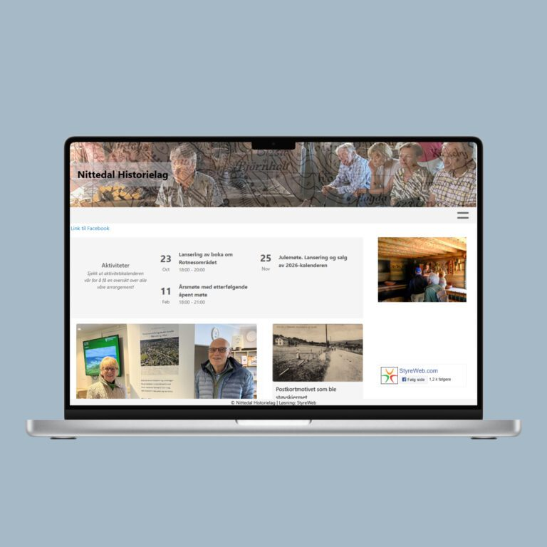
Nittedal Historielag
Etablert 1953Nittedal Historielag ble stiftet i 1953, og tilbyr bl.a. turer, møter, kurs og publikasjoner, alt tilpasset for å bli kjent med Nittedals historie. Samarbeider med Romerike Historielag (Kilde: nittedal-historielag.no).Nittedal Historielag ble stiftet i 1953, og tilbyr bl.a. turer, møter, kurs og…
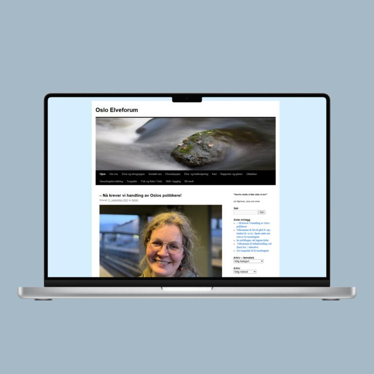
Oslo Elveforum
Etablert 2000Oslo Elveforum ble stiftet i 2000, og er et kompetanse- og kontaktforum for frivillige arbeidsgrupper for Oslos elver og bekker. Formålet er å bidra til vern, rehabilitering og gjenåpning av byens vassdrag i byggesonen. Oslo Elveforum arbeid…Oslo Elveforum ble stiftet i 2000, og er et kompetanse- og kontaktforum…
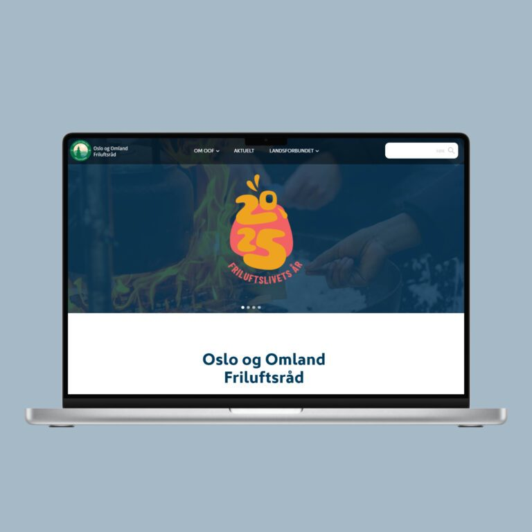
Oslo og Omegn Friluftsråd
Etablert 1936Oslo og Omegn Friluftsråd (OFF) ble stiftet i 1936 (opprinnelig: Oslomarkas Friluftsråd), og er en paraplyorganisasjon med 42 medlemsorganisasjoner og 14 medlemskommuner/fylkeskommuner. OOF har seks ansatte medarbeidere og…Oslo og Omegn Friluftsråd (OFF) ble stiftet i 1936 (opprinnelig: Oslomarka…

Oslo og omland sopp- og nyttevekstforening
Etablert 2005Oslo og omland sopp- og nyttevekstforening, er en lokalforening tilsluttet Norges sopp- og nyttevekstforbund (stiftet 2005). Foreningen arbeider for å øke kunnskapen om, og bruken av sopp og nyttevekster. Vi er engasjert i arbeidet med…Oslo og omland sopp- og nyttevekstforening, er en…
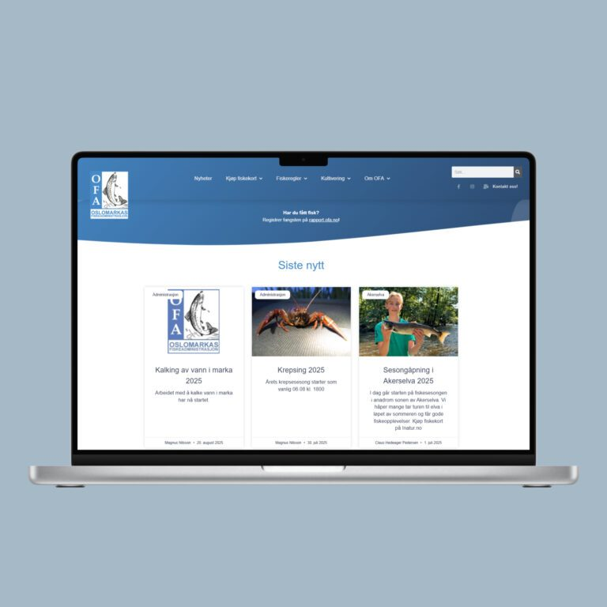
Oslomarkas Fiskeadministrasjon
Etablert 1936Oslomarkas Fiskeadministrasjon (OFA) ble stiftet i 1936, og driver fiskekultivering i Oslomarka. Administrasjonen ble til etter et initiativ fra Arbeidernes Jeger og Fiskeforening og Oslo Sportsfiskere for å gjøre fisket i Oslomarka mer tilgjengeli…Oslomarkas Fiskeadministrasjon (OFA) ble stiftet i 1936, og driver…

Ringerike Historielag
Etablert 1953Ringerike Historielag ble stiftet i 1953. Laget arbeider for å øke interessen for lokalhistorie, kulturvern og for å ta vare på alt som kan fortelle om folks levevilkår gjennom tidene. Laget samler inn - og publisere - om målføre, muntlig tradisjon,…Ringerike Historielag ble stiftet i 1953. Laget arbeider for å øke interessen f…

Romerike Historielag
Etablert 1920Romerike Historielag ble stiftet i 1920, og har som formål å fremme interessen for og arbeide for vern av immaterielle og materielle kulturminner samt kulturlandskap og kulturmiljøer på Romerike, å samle inn og formidle lokalhistorien på…Romerike Historielag ble stiftet i 1920, og har som formål å fremme…

Sarabråtens Venner
Etablert 2010Arbeidsgruppa Sarabråtens venner arbeider for få dette fordums så staselige stedet i Østmarka fram i folks bevissthet – blant annet ved hjelp av informasjon og ulike arrangementer. Vi ønsker å få Sarabråten opp og fram som det fantastiske…Arbeidsgruppa Sarabråtens venner arbeider for få dette fordums…

Skiforeningen
Etablert 1883Skiforeningen (Foreningen til Ski-Idrettens Fremme) ble stiftet i 1883, og er en av Norges eldste friluftsorganisasjoner. Det var Christiania Skiklub (stiftet i 1877) som tok initiativet til dannelsen av Skiforeningen. Skiforeningen arbeider for å fremm…Skiforeningen (Foreningen til Ski-Idrettens Fremme) ble stiftet i 1883,…
Søndre Aker Historielag
Etablert 1980Søndre Aker Historielag ble stiftet i 1980, og arrangerer jevnlige medlemsmøter med foredrag og innbyr til turer med omvisning. Gir ut og selger bøker og digitaliserer og publiserer gamle bilder fra området. Medlemsbladet er Sør i Aker…Søndre Aker Historielag ble stiftet i 1980, og arrangerer jevnlige…

Sørkedalen Historielag
Etablert 1996Sørkedalen Historielag ble stiftet i 1996, formålet er å skape forståelse og fremme interessen for Sørkedalens historie – samt å arbeide for å bevare dalens kulturminner og kulturlandskap. Viktige oppgaver for laget er å samle inn og registrere…Sørkedalen Historielag ble stiftet i 1996, formålet er å skape forståelse…
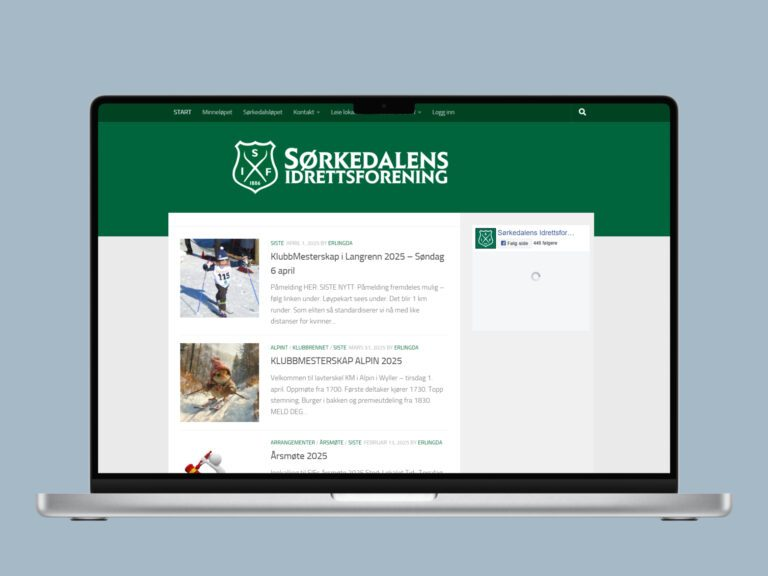
Sørkedalens Idrettsforening
Etablert 1886Sørkedalens Idrettsforening ble stiftet i 1886 som Sørkedalens Skiklub. Idrettsforeningen ble startet av Carl Grøttum. Grøttum var også klubbens første formann. Skiidrett var klubbens kjerne i mange år. Foreningen er kjent for de historiske…Sørkedalens Idrettsforening ble stiftet i 1886 som Sørkedalens Skiklu…
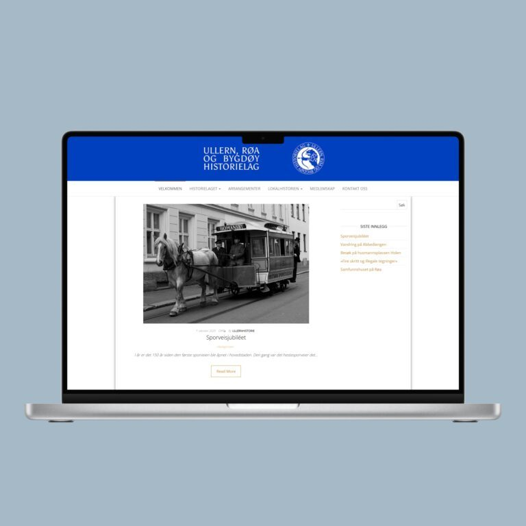
Ullern, Røa og Bygdøy Historielag
Etablert 1994Lokalhistorisk forening for gamle Ullern sogn i Aker. Ullern, Røa og Bygdøy Historielag ble stiftet 14. mars 1994 som «Ullern Historielag», også skrevet med undertittelen «Historisk forening for Bygdøy, Ullern, Røa og Sørkedalen». Historielaget va…Lokalhistorisk forening for gamle Ullern sogn i Aker. Ullern, Røa og…

Vestre Aker Historielag
Etablert 1992Vestre Aker Historielag, tidligere Vinderen Historielag, ble stiftet i 1992. Ved siden av medlemsbladet og foredrag på jule- og årsmøter arrangerer historielaget ekskursjoner og omvisninger hvert år. Medlemsbladet Vestre Aker Historielags blad…Vestre Aker Historielag, tidligere Vinderen Historielag, ble stiftet i 199…

Østensjø Historielag
Etablert 1983Østensjø Historielag ble etablert i 1983, og har som formål å fremme interessen for lokalhistorie og kulturvern i vårt område, samle inn alt som har betydning for områdets historie og som kan fortelle om folks livsvilkår gjennom tidene. Ved…Østensjø Historielag ble etablert i 1983, og har som formål å fremme…

Østmarkas Venner
Etablert 1966Østmarkas Venner ble stiftet i 1966, og har som formål å bevare Østmarka som natur- og friluftslivsområde, og sikre kulturminner for dagens og kommende generasjoner. Foreningen er partipolitisk uavhengig og åpen for alle natur- og…Østmarkas Venner ble stiftet i 1966, og har som formål å bevare Østmarka…